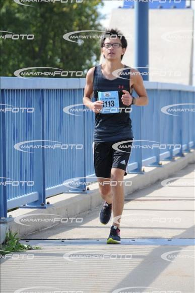

Hebi Li

If you look on the ground in search of a sixpence, you don't look up, and so miss the moon.
I'm currently a PhD student in CS@ISU starting 2014 Fall. I graduated from Electrical Engineering (1010) of USTC in 2014. See details in my CV(pdf).
Projects
Dynamic Analysis on Demand
I was researching in Program Language and Analysis from 2015 Summer to 2018 Spring. We designed an on-demand dynamic analysis framework, called Helium, and is open source.
USTC RoboGame 2012
I was the leader of a team in USTC RoboGame 2012, and we ranked 3rd among 26 teams. The robot precisely fetched a bunch of flowers, found routes using image processing, climbing the ladders, and finally put the followers precisely in front of the sculpture of Jici Yan. The micro controller was Freescale XS128. You can see a small video of our robot in the competition that day. We also have a technical report in Chinese (pdf)
Wiki
I use writing to refresh knowledge. More articles can be found on at wiki.lihebi.com. Disclaimer: these are my understandings, not necessarily 100% correct. Read at your own risk.
Programming has been a big part of my work, I'm particularly passionate of writing functional programs and climbing the ladder of abstraction. The best language for that is lisp. It is the ultimate meta language that is ready for tuning as an ideal tool for any tasks, instead of forcing you to think in its way. I believe programming and computing has a basis on lisp, both the history and future. Other languages, e.g. Python, are helpful for collaborate with people.
I started to use Linux from 2011 when I got my first laptop. I started with Vim initially, and catch up with Emacs from 2015.
Essays
I have this section to write down variety of my thoughts, for anyone who wants to know what kind of person I am, and whether they want and to get to know me and make friends or the other way around.
The essays are not finished, and will be consistently updated.
First of all, I document the quotes from the great minds.
- research
- global view
- the future
- exponential growth
- life and time
- there is the whole world out there
- Independence and collaboration
Misc
I picked up skills for wooden projects and vehicle maintenance in the US. I crafted a standing desk, a versatile workbench, a simple sofa whose top is a slider for car engineering work. I have a Kawasaki Ninja 300 and a miata for road trip, and do all the maintenance myself, including replacement of engine oil and filter, transmission oil, differential oil, coolant, spark plug, air filter, break fluid, clutch fluid, and tire rotation.
I enjoyed traveling. I was driving along Road 1 in California along San Diego and Los Angeles in 2015 Spring, experiencing Orlando Universal Studio and cruising to Nassau in 2016 Winter, relaxing in Las Vegas 2017 Spring. I drove the round trip from Iowa to Seattle 2017 Summer.
Exercise brings me a lot of joy and energy. I finished full marathon (pdf) in 4h 35min, Oct 2017 at Des Moines. Catch me up this year on Oct 20 2018.
